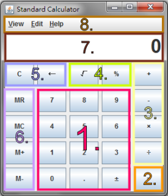
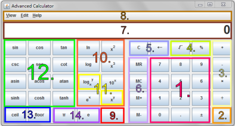
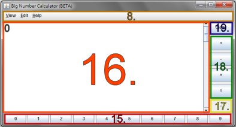

A caculator with the basic functions.
1. 0~9 : can input numbers util the limit is reached.
. : a decimal point.
± : can switch the sign to positive or negative.
2. = : is equal to, returns the result.
3. +, -, ×, ÷ : plus, minus, multiplication, division
can calculate equation likes "2 + = "or "2 + 2 = = =...".
4. ¡Ô : square root. e. g. 4 ¡Ô returns 2.
% : returns the modulo of two values. e. g. 7 % 3 returns 1.
5. C : clear the display area.
¡ö : backspace.
6. MR : show the memory value.
MC : clear the memory value.
M+, M- : add to / subtract from the memory value.
7. The Display Area
8. The Menu Bar

A calculator with more functions. A simple scientific calculator.
1. ~ 8. : same as the Standard Calculator.
9. n! : factorial n. ( n should be a positive integer). e. g. 6 n! returns 720.
10. ln : natural logarithm (base e).
log : logarithm (base 10).
ex : e raised to the power x.
x2 : square.
x3 : cube.
10x : 10 raised to the power x.
e. g. 5 x2 returns 25.
11. logxy : logarithm (base y).
xy : x raised to the power y.
e. g. 8 xy 3 = returns 512
12. sin, cos, tan : sine, cosine, tangent
csc, sec, cot : cosecant, secant, cotangent,
multiplicative inverse of sine, cosine, and tangent.
asin, acos, atan : arcsine, arccosine, arctangent,
inverse functions of sine, cosine, and tangent.
sinh, cosh, tanh : hyperbolic functions, hyperbolic sine,
hyperbolic cosine, hyperbolic tangent.
e. g. 0 cos returns 1.
13. ceil, floor : ceiling and floor of a value. e. g. 9 . 2 floor returns 9.
14. £k : constant £k, which is 3.141592653589793 in the calculator.
e : constant e, which is 2.718281828459045 in the calculator.

A beta version of calculator for caculate long integers of any length.
Note that there are some limits of the caculations:
e. g. 1. The calculators CANNOT calculate equations like "2 + 2 = = =..."
2. ÷ only returns the quotient and the remainder,
and it might take some time if the quotient is long.
8. same as above.
15. 0~9 : can input numbers without limits.
16. The Display Area with a scroller bar.
17. = : is equal to, returns the result,
will be enabled after +, -, ×, or ÷ is pressed.
18. +, -, ×, ÷ : plus, minus, multiplication, division,
will be disabled after = is pressed.
19. Clear : clear the display area, enable the +, -, ×, and ÷, disable the =.